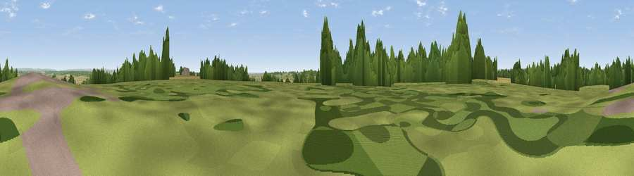

Stocks Hill
#22178 in England · top 27% of its area beats it · near WittershamThe view, rendered

A 360° render of this exact spot computed from the terrain model, tree cover and land cover — summer colours, afternoon light, calibrated against photographs of famous viewpoints. Real trees, hedges and buildings will differ in detail.
The panorama
Grey silhouette: terrain skyline in each direction (720 bearings, Earth curvature and refraction included). Dashed green: skyline with trees (+15 m) and buildings (+8 m) as obstacles. Blue strip: how far the ground is visible on each bearing.
Where the view opens
Wedge length = distance to the farthest visible ground on that bearing (vegetation-aware). Rings at 10, 25 and 50 km.
What fills the view
42% grassland · 31% cropland · 24% woodland · 1% built-up ·
Angular shares of the visible panorama (visual magnitude), not map area. Landscape diversity 0.51 (0–1 Shannon).
Key numbers
More beautiful places nearby
The staircase of upgrades: each row has a higher view potential than everything closer. Driving times are estimates from straight-line distance, calibrated against real road routing — check an actual route before setting out.
| Place | Direction | Drive | Score |
|---|---|---|---|
| Viewpoint near Stone in Oxney | ESE · 3 km | ~7 min | 60.1 |
| Viewpoint near Fairlight | SSW · 16 km | ~29 min | 75.1 |
| Viewpoint near Fairlight | SSW · 17 km | ~29 min | 78.2 |
| Viewpoint near Fairlight | SSW · 17 km | ~30 min | 79.0 |
| Viewpoint near Capel-le-Ferne | ENE · 34 km | ~52 min | 80.2 |
| Viewpoint near Willingdon | SW · 42 km | ~62 min | 83.4 |
| Wilmington Hill | WSW · 44 km | ~64 min | 85.4 |
| Viewpoint near Alciston | WSW · 48 km | ~68 min | 85.8 |
51.01384, 0.72807 · source: dobih hill · position refined by local search. Computed location — check access rights before visiting.